Computer Aided Design
This is where I document the CAD assignment and learn using 2D raster & 2D vector software, 3D CAD software.
What I learned in this part
Raster
Crop
Resize
Straightening
Remove background
Vector
Trace bitmap (raster -> vector)
Basic tools -> spline/bezier curves lines, circles etc
Step by Step Documentation for Raster below:
Installing Inkscape:
First I go to this website to download and install inkscape:
Inkscape Download Link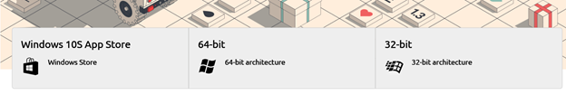Figure 1: Downloading
After installation, I ran the program and skipped the first few parts and got right in

Figure 2: Running it for the first time
Cropping:
Afterwards I went online to grab an image for me to edit, Inkscape, meet Kirby!!
Time to crop kirby using inkscape
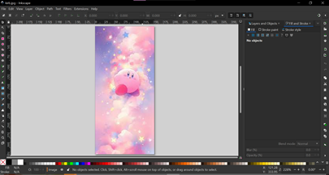
Figure 3: Opening up le kirb
To crop, first choose a vector shape, apply it on the canvas, then reduce its opacity to ensure the position is correct.
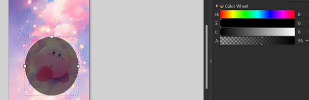
Figure 4: Sunglasses simulator
Select both the object and background using Shift + Left click, afterwards, click on Object > Clip > Set Clip
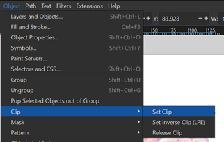
Figure 5: Software magic
Afterwards, you should have a complete crop. Well done!! If you do not want to crop, you can click on Object > Clip > Release Clip
 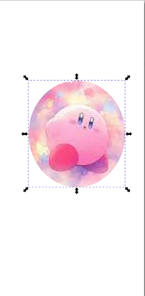
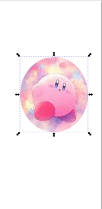
Figure 6: Uncropped vs cropped kirb
Resizing:
To resize documents, Click on File > Document Properties to access the document resizing
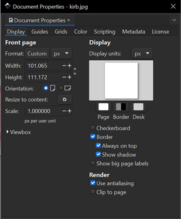
Figure 7: Click on resize to content
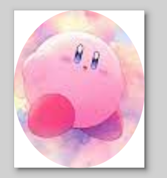
Figure 8: Rounded kirb
And that’s it for resizing documents
Straightening:
If the image contains some curved edges, you can use straightening to get rid of the curved edges.

Figure 9: A random shape I drawn
With this weird line I just made, I am going to make the curved shapes into a straight line
By using the node tool, I can click on each of the node and manipulate it until it becomes straight-ish

Figure 10: A straightish line
Step by Step Documentation for Vector below:
Trace bitmap (raster -> vector):
First we click on Path > Trace Bitmap to select the option.

Figure 11: Trace bitmap
Afterwards, you can modify anything you want and click on apply to convert raster to vector
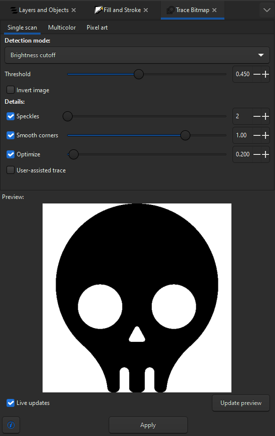
Figure 12: Modify (optional) before clicking on apply
After clicking on apply, the new vector graphic will pop up, zooming in shows that the curved edges are sharper.
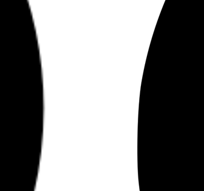
Figure 13: Left: Raster graphics Right: vector graphics after bitmap trace
AutoDesk Fusion 360:
Now, it is time to learn Autodesk Fusion 360. The item that I’m going to make is a dog tag.
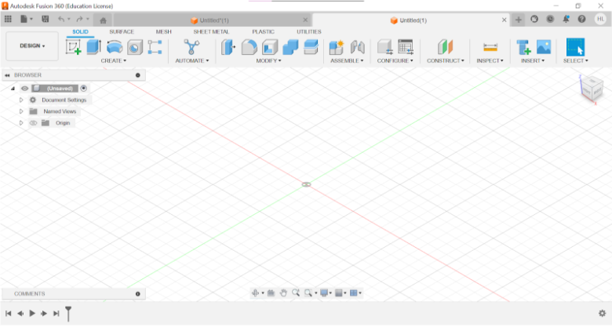
Figure 14: Fusion 360 User Interface
First, we start off using the sketch tool and sketch out a rectangle that is 70mm to 30mm in size.
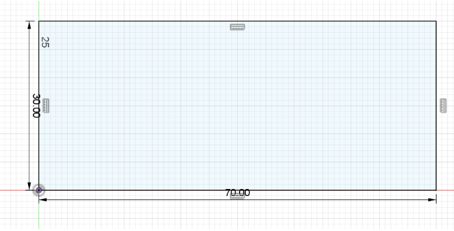
Figure 15: Erected a rectangle
After creating the rectangle, I use the fillet tool to create rounded angles for all 4 corners of the shape
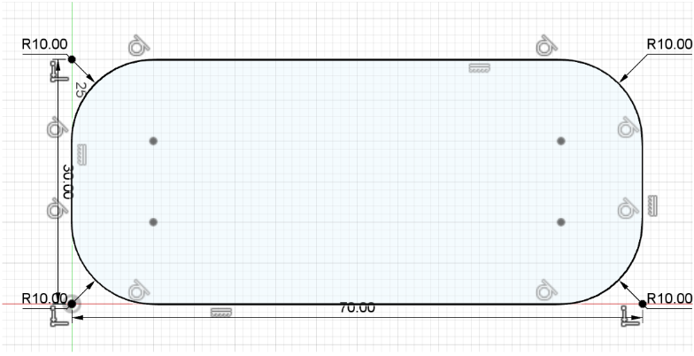
Figure 16: Rounded Apple looking ass shapes
When I’m done smoothing them out, I use the circle tool to create a hole for the chain to go through on the left side of the shape with dimensions: 8mm rad (Outer circle) 4mm (Inner circle)
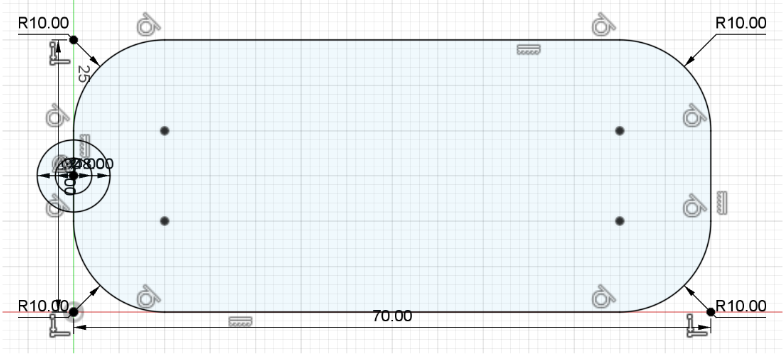
Figure 17: Creating hole to put chain/rope through
Afterwards, I select the outer circle and the rounded rectangle and extrude it to 5mm in thickness
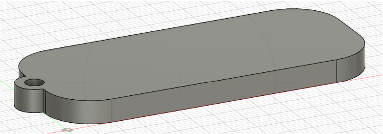
Figure 18: Now this looks like a dogtag ig?!?!?!!
After this, I have to carve my name into the dogtag by using the Sketch > Create > Text tool.

Figure 19: Insert text
Key in what you want and press ok

Figure 20: Dogtag with name on it
To insert an image/shape on it, you can use inkscape and generate a vector image. After you’re done, you can click on Insert > Insert SVG.

Figure 21: Inserting vector image
Afterwards, you can modify and change positions before putting it on the dogtag.

Figure 22: After a bit of fiddling around, we’re done!
Now time for me to do another project to practice, a Desk Caddy (Pencil Holder)
First, I decide on some dimensions that I want for my desk caddy
Length: 240mm
Height: 70mm
Width: 120mm
Open up Autodesk and click on sketch to create any shape you want, in my case, i will sketch out the rectangle that was specified above

Figure 23: Created the rectangle
Continue sketching and adding more features to the rectangle, for example, I want to create a hole in the middle for stationeries and other desktop objects such as sticky notes,pens etc using the Shell tool.

Figure 24: Shell with 5mm gap in the middle
Now, I want to create a phone/tablet holder on the front with a small rectangle with a groove

Figure 25: Small groove for devices
Afterwards, I right click > extrude until the other end of the model to create it, Afterwards, I use the fillet option to round off the edges.

Figure 26: Rounded off corners for desk caddy
Now, I am going to add the borders that separate the stuff inside the caddy
First, I will create some grooves in there that allows the walls to slide in (Preferably 1mm for lesser impact to structural integrity).

Figure 27: Created borders for the desk caddy
Finish sketch and extrude

Figure 28: Extruded the inside part
Now for the pen and pencil holder on the top left corner.

Figure 29: Creating circles
After we are done, I’m going to use extrude and push them into the caddy, making holes for pens and pencils.

Figure 30: Completed desk caddy <3